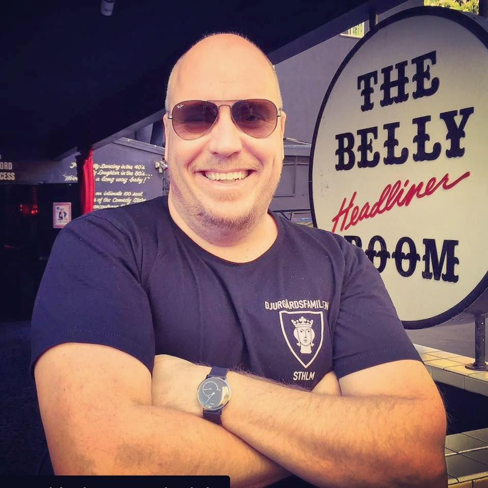

Om Roslagen Live
Roslagen Live startade som en nätbaserad radiostation och blev senare en poddplattform med rötter i Norrtälje. Sedan 2020 har vi sänt till över 33 länder världen över. Målet är att förmedla skärgårdskänsla på ett personligt, lekfullt och humoristiskt sätt – med standup, kultur, evenemang och intervjuer.
Janne Westerlund
Janne Westerlund (f. 1971) är ståuppkomiker, programledare och arrangör. Debuterade 1992 på klubben Patricia i Stockholm, grundade Stockholm Comedy Klubb, leder Skrattstock sedan 2002 och har medverkat i radio/TV och röstskådespeleri.
Vilka finns bakom?
Utöver Janne har vi haft många lokala profiler med – musiker, kulturpersonligheter och nya komiker från Roslagen. Och så finns våra två döldis‑tekniker: alltid redo att rädda sändningen – men så hemliga att vi inte ens vet var de håller hus. 😉